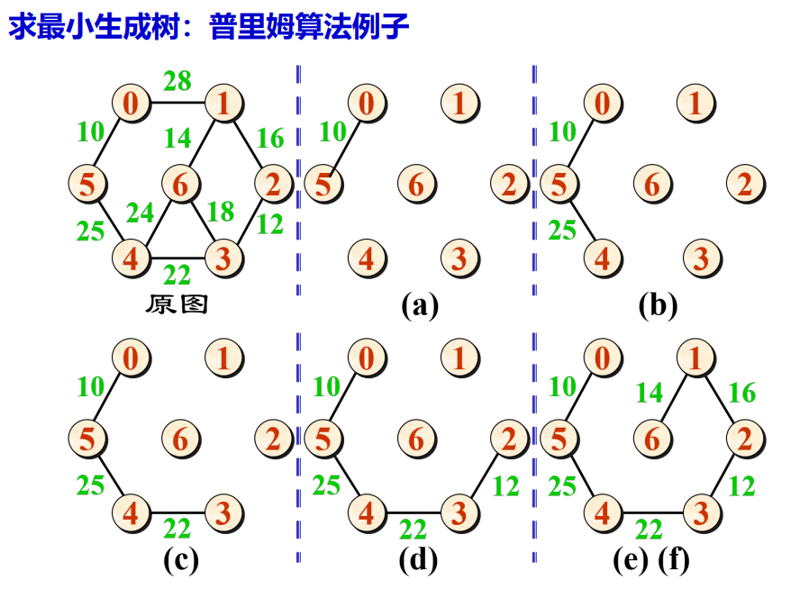
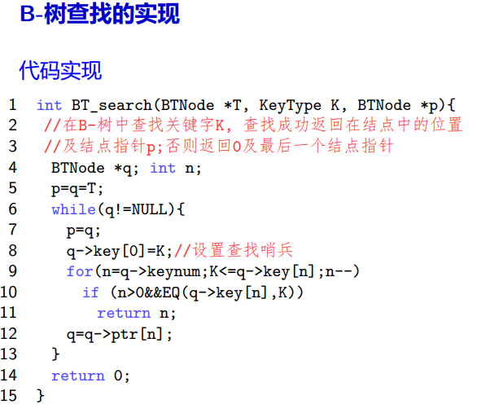

伍少枫的个人主页
Shaofeng's Personal Website
Data Structure
Content outline
- Linear list/线性表
- 基本定义:
n(n>=0)个具有相同特性元素组成的有限序列。 - 顺序实现：顺序表
#define LIST_INIT_SIZE 100 #define LIST_INCREMENT 10 typedef struct _sqlist{ Elemtype* elem; int length; int size; }SqList; - 链式实现：链式表 (用一组任意的存储单元存储线性表中元素)
#define LIST_INIT_SIZE 100 typedef struct _lnode{ Elemtype* elem; struct _lnode * next; }Lnode,*LinkList;
其他的链式表：循环链表（尾部next回到头结点head）、双向循环链表
- 典型问题
- 顺序表和链式表的比较，例如是否能随机存取和顺序存取
- 时间复杂度分析：线性表插入、删除，链式表插入、删除...
- 容易搞错的基本操作：清空表、销毁表
- Stack
- 顺序实现：顺序栈
栈空：base==top，栈满：top-base==stacksize
#define STACK_INIT_SIZE 100 #define STACK_INCREMENT 10 typedef struct _sqstack{ Elemtype* base; Elemtype* top; int stacksize;//已分配的存储空间 }SqStack; - 链式实现：链式栈
typedef struct _stacknode{ Elemtype data; struct _stacknode * next; }StackNode; typedef struct _linkstack{ StackNode * top; }LinkStack; - 基本操作的实现：判断栈空，出栈，入栈，清空栈，销毁栈
- 栈的应用
- 数制转换计算时储存结果并按顺序输出
- 行编辑器的实现
- 检测括号匹配
- 中缀式求值：
- 双栈求值（符号栈和数字栈）：
数字入栈；当前符号优先级小于栈顶符号优先级，处理栈顶符号；当前符号优先级大于栈顶符号优先级，入栈等待；相等，消配对括号 - 中缀式转后缀式（逆波兰式）:
方法和双栈求值类似，注意碰到右括号时一直出栈直到左括号出栈；逆波兰式求值一次弹出两个数字，此时运算顺序已经排列好了
- 双栈求值（符号栈和数字栈）：
- 函数调用
- 调用过程：栈帧入栈、执行被调函数、出栈、按返回地址继续执行主调函数
- 递归
- 典型问题：汉诺塔、斐波那契数列、阶乘时间空间复杂度（On）
- 提高算法时空性能：尾递归、全局栈存储信息
- 链式实现：链式队列
typedef struct _queuenode{ Elemtype data; struct _queuenode * next; }QueueNode; typedef struct _linkqueue{ QueueNode * front, *rear;//front指针恒等于head，这样出队方便改变指针指向 }LinkQueue; - 顺序实现：循环队列
#define MAXSIZE 100 typedef struct _sqqueue{ Elemtype *queue; int front, rear;//用下标指示队头队尾 }SqQueue;-
循环队列留出一个位置用于区分队满和队空
- 入队：rear = (rear+1)%MAXSIZE
- 出队：front = (front+1)%(MAXSIZE-1)
- 判断队满：front==(rear+1)%MAXSIZE
- 判断队空：front==rear
- 基本概念
串值、串长、空串、空白串、子串、子串的位置、串相等、串变量、串常量 - 定长顺序存储实现
#define MAXSTRLEN 100 typedef struct _sstring{ unsigned char str[MAXSTRLEN+1];//0位置存储串长 }SString; - 堆分配存储实现
堆分配要注意做操作时要要释放原来的空间，因为原来内存可能被占用
#define INITSTRLEN 100 typedef struct _hstring{ char * ch; int length; }HString; - 块链存储实现
#define BLOCK_SIZE 4 typedef struct _bnode{ char data[BLOCK_SIZE];//以Bnode为单元，每个单元BLOCK_SIZE个字符，为了提高内存利用率；若不够一个单元，用'@'占位 struct _bnode * next; }Bnode; typedef struct _bstring{ Bnode * head; int strlne; }BString; - 串的模式匹配
- 暴力模式匹配
时间复杂度O(nm)，即每次都在最后一个出错，实际情况下近似于O(n+m) - KMP算法
- 算法核心思想：对模式串T计算next[]数组，当T的j位置失配，j=next[j]，即按照寻路表向右滑动一定距离
- 求next[]数组
- 暴力（穷举）法：比较长1,2，...，j-1的子串
- 改进穷举法：先比较长1,2，...，j-1的子串最后一位，相等再比较这两个子串
- 递推法（实现类似KMP算法）
void next3(int next[], SString T) { next[0] = T[0]; next[1] = 0; next[2] = 1; int i=2, j =1; while(i<T[0]){ if(j==0||T[i]==T[j]){i++;j++;next[i]=j} else{j=next[j];} } }
- KMP算法
时间复杂度为O(length(s))，其中s为主串的长度，原因是：主串指针向后移动length次，在单个字符匹配并且i向后移动的过程中模式串最多会回跳j次，而j取决于匹配的次数，最多为length，所以时间复杂度为O(length(s))；另外这里不包括求next数组的复杂度。int KMP_SString(SString S, SString T, int pos, int next[]) { if (pos <= 0 || pos > S[0]) { return -1; }//检查pos是否合法 int j = 1; int i = 1; while (j<=T[0]&&i<=S[0]) { if (j == 0 || S[i] == T[j]) { i++; j++; }//首个字符失配（此时j=0，是非法的值）或者当前字符匹配，i和j都往后移动一下 else { j = next[j]; } } if (j > T[0]) { return i - T[0]; } return -1; }
- 暴力模式匹配
- 存储方式
- 二维数组：行优先存放、列优先存放。另外要注意所有数组的下标都是从0开始的。
行优先存放：LOC(i,j) = a + (in+j)L - n维数组：映象函数。n维数组由b1个n-1维数组构成，以此类推。
LOC(j1,j2,j3,...,jn) = a + Σciji ,其中ci是第i维地址系数，用于提高运算速度，ji是第i维坐标
cn = L, cj-1 = cj * bj
- 二维数组：行优先存放、列优先存放。另外要注意所有数组的下标都是从0开始的。
- 顺序实现
typedef struct _array{ Elemtype * base;//数组元素基址 int dim;//维度 int * bounds;//各维度元素个数存放基址 int * constant;//各维度地址系数存放基址 } - C语言实现参数个数可变函数：
- va_list类型：存放变参
- va_start(va_list, n)：从本函数参数中读取变参到va_list变参表中
- va_arg(va_list, int)：以int类型读取从va_list中读取一个参数，每读取一个下次读取会自动读下一个
- va_end(va_list)：结束读取，与va_start配合使用
- 对称矩阵、二对角矩阵、三对角矩阵：顺序压缩存储映象函数的求解
一般为线性关系，通过 k = ai + bj + c 解方程来求解 - 稀疏矩阵(Sparse Matrix)
- 顺序存储实现：三元组表(Triple)
代码实现:带先后顺序结构体数组#define MAXSIZE 12500 typedef struct _triple{ Elemtype e; int i,j; }Triple; typedef struct _tsmatrix{ Triple data[MAXSIZE+1];//索引0处未用，行为主序（行数小的在前面） int mu, nu, tu;//行数、列数、非零元素数 }TSMatrix; - 链式存储实现：十字链表

代码实现:两个指针数组加一堆链表节点相连十字链表的优点：typedef struct _olnode{ Elemtype e; struct _olnode * down, *right; int i,j;//该节点的行、列数，设置此域是为了方便建立十字链表的时候找到插入节点的位置 }OLnode; typdef struct _crosslist{ int mu,nu,tu;//行数、列数、非零元素数 OLnode ** chead, rhead;//列指针、行指针数组 }CrossList;
对于需要大量移动非零元素位置的操作，十字链表比三元组表更加容易。例如转置（递归交换down和right指针即可）、等于x的元素置零（递归实现，递归过程中记录递归来源节点的指针从而修改链表连接关系，例如将上一个节点的right指针指向被置零节点的right）等操作 - 注意事项：
绘制三元组表要注意行/列为主序，列/行为次序；绘制十字链表注意节点包括行、列、值和down、right
- 顺序存储实现：三元组表(Triple)
- 三元组表实现矩阵转置操作
- 方法1：先交换行号和列号，再按照行先序、列次序的顺序进行排序
- 方法2：从列号j=1开始，重复从前往后搜索列号等于j的元素（先搜索到的元素行号更小），然后放入新的三元组表内，对j=1到j=n循环。时间复杂度O(tu*nu)，即每次都要搜索表，要搜索nu次
- 基本定义
- 表头：表非空时，表中第一个元素称作表头。
- 表尾：除去表头其他元素组成的广义表称作表尾。
- 表长：广义表中元素的个数。
- 表深：广义表中括号的最大层数。空表的深度为0。
- 常见问题
- 广义表与线性表的区别？
答：广义表元素可以是原子也可以是广义表，而线性表的元素是原子。广义表是线性表的推广。 - 广义表的表尾是？
答：广义表。 - 空广义表的长度是？深度是？
答：长度为0，深度为1。原子节点的深度定义为0. - 一个递归定义的广义表，例如 E = (a,E) 表长是多少？表深又是多少？
答：表长为2，表深为无穷。 - 如何唯一确定一个广义表？
答：一个确定的表头和一个确定的表尾即可确定广义表。
- 广义表与线性表的区别？
- 链式存储实现：
typedef struct _glnode{ int tag;//tag为0代表原子节点，tag为1代表表结点 union{ Elemtype value;原子节点的值 struct _glnode * hp;//表头指针，实际上这里放表尾指针也可，因为原子节点本身就没有表头表尾。但是不能同时放表头表尾，因为union每次只能存一个成员 }; struct _glnode * tp;//表尾指针，对于原子节点来说恒为NULL，若表尾为空表也为NULL； }GLNode;
- Basic definations:
node, degree, leaf, branch node, degree of tree, level, height, ordered/disordered tree, forest, child, parent, sibling, ancestor, descendant - Binary tree
- 完全二叉树和满二叉树
- 二叉树的性质
- n0=n2+1
- 完全二叉树节点数量和深度关系
- ...
- 存储结构: 顺序存储结构、二叉链表、三叉链表
- 顺序结构
- 二叉链表
- 三叉链表
- 二叉树的遍历: 先序遍历、中序遍历、后序遍历、层序遍历
- 递归实现
- 非递归实现
- 先序遍历：
利用栈实现，每次出栈一下，出栈元素的rchild和lchild先后入栈 - 中序遍历：
利用栈实现，从栈顶元素向左走到尽头，出栈后rchild入栈，然后重复 - 后序遍历：
利用栈实现，从栈顶元素向左走到尽头，若栈顶元素rchild和lchild均被访问，出栈；否则rchild入栈，重复。注意：后序遍历非递归算法需要增加visit域 - 层序遍历：
利用队列实现，每次出队列一下，出队列元素的lchild和rchild先后入队 - 一些经典问题
- 由先序序列和中序序列唯一确定一颗二叉树
- 前缀式、中缀式、后缀式与先序、中序、后序遍历
- 线索二叉树
- 线索二叉树节点结构
- 二叉树的线索化
- 线索二叉树寻找前驱或者后继
- Tree
- 树的存储结构
- 双亲表示法
- 孩子表示法
- 多重链表
- 孩子链表（图的邻接表）
- 带双亲的孩子链表（双亲表示法+孩子链表）
- 孩子兄弟表示法
- 树的遍历：先根遍历、后根遍历、层序遍历
- 先根遍历：
借助孩子兄弟表示法和先序遍历实现 - 后根遍历：
借助孩子兄弟表示法和中序遍历实现 - 层序遍历：
借助孩子兄弟表示法和队列实现 - Forest 以下均是在森林非空的前提下进行的
- 先序遍历：
借助孩子兄弟表示法和先序遍历实现，也可看做依次先根遍历子树 - 中序遍历：
借助孩子兄弟表示法和中序遍历实现，也可看做依次后根遍历子树 - Huffman tree
- 基本概念
哈夫曼树、树的内部/外部路径长度、带权路径长度 - 一些简单的问题
- 包含n个权值的Huffman树总共多少节点？ 2n-1
- 由权值列表画Huffman树
- 最佳判定树 （能否直接套用Huffman算法？ 不一定）
成绩判定问题，构建Huffman树必须相邻的成绩区间项相结合，原因：if else语句一次只能判断大于还是小于等于 - 计算外部路径、带权路径？
- Huffman算法 - 构建Huffman树
- Huffman树以及Huffman算法的代码实现
推荐的数据结构：结构体数组
- 重要概念（简单概念省略）：
网络、弧、完全图/有向完全图、简单路径、 简单回路、连通分量、强连通图、强连通分量、 生成树、有向树、生成森林、 稀疏图、稠密图 - 图的存储结构
邻接矩阵、邻接链表、十字链表、邻接多重表、边表- 邻接矩阵（二维数组）+顶点数组
注意：对于有向图，下图中邻接表行为起点，列为终点。对于带权图，不相关联的点边权置为INF；对于不带权图，不相关联的边置为0。 代码实现：#define MAXSIZE 100 #define INF 999 #typedef enum {DG,UDG,DN,UDN}GraphType; typedef struct _arccell{ ArcType w;//边权值 InfoType * info;//边信息 }ArcCell, AdjMatrix[MAXSIZE][MAXSIZE]; typedef struct _adjgraph{ AdjMatrix arc; VexType vex[MAXSIZE]; GraphType kind; int vexnum,arcnum; }AdjGraph; - 图的邻接表：顶点数组+边链表
代码实现：适合稀疏图
#define MAXSIZE 100 typedef struct _arcnode{ ArcElemtype w; InfoElemtype * info; int adjvex;//相关联的另一个节点，注意这里用顶点数组下标表示这个点 struct _arcnode * nextarc; }Arcnode; typedef struct _vexnode{ VexElemtype data; Arcnode * firstarc; }Vexnode; typedef struct _algraph{ GraphType kind; int vexnum, arcnum; Vexnode vex[MAXSIZE]; }ALGraph; - 有向图的十字链表：出边表+入边表，边节点合并，增加节点内容即可实现
绘制时先绘制出边表（邻接表），再补充入边表 代码实现：与邻接表相似
代码实现：与邻接表相似
#define MAXSIZE 100 typedef struct _arcnode{ ArcElemtype w; InfoElemtype * info; int headvex, tailvex;//该边的头和尾（头指的是箭头终点），注意和邻接表一样，用节点数组的下标来表示 struct _arcnode * hlink,* tlink;//指向下一个入边/出边结构体的指针 }ArcNode; typedef struct _vexnode{ VexElemtype data; ArcNode * firstin, *firstout;//指向第一个入边/出边的指针 }VexNode; typedef struct _olgraph{ GraphType kind; VexNode vex[MAXSIZE]; int vexnum,arcnum; }OLGraph; - 无向图的邻接多重表：边节点合并的邻接表，增加边节点的内容即可
代码实现：与邻接表相似，适合于注重边的遍历、访问、搜索的算法，原因是邻接表访问过需要在两个边节点上做标记，非常麻烦，而邻接多重表只需要在一处标记。
#define MAXSIZE 100 typedef struct _arcnode{ int mark;//访问标记，标记是否被访问 int iadjvex;//一个端点 struct _arcnode * ilink;//下一个与i端点相连的边节点的指针 int jadjvex; struct _arcnode * jlink; ArcElemtype w; InfoElemtype * info; }ArcNode; typedef struct _vexnode{ VexElemtype data; ArcNode * firstarc; }VexNode; typedef struct _amlgraph{ GraphType kind; VexNode vex[MAXSIZE]; int arcnum, vexnum; }AMLGraph;
- 邻接矩阵（二维数组）+顶点数组
- 图的搜索与遍历
- 图的搜索框架：基于Fringe集合
不同的搜索算法即插入Fringe集合的方式不同。- 深度优先搜索：邻接点插入Fringe的头部。要注意，若邻接点已被访问或已在Fringe内，取消插入，否则会导致算法并非深度优先。
- 广度优先搜索：邻接点插入Fringe的尾部。要注意，若邻接点已被访问或已在Fringe内，取消插入，否则会导致算法并非广度优先。
- 启发式搜索：将邻接点插入到Fringe的特殊位置。例如Dijkstra算法，将当前总路径距离小于Fringe头部元素总路径距离的邻接点插入到头部，最终导致每次拓展总是从当前最后确定最短路径的点拓展，符合Dijkstra算法思想。
- 图搜索算法的输出：搜索树
作用：保存每个节点的来边和双亲节点，从而用于保存路径（双亲表示法向双亲溯源直到根节点，即初始节点）。
搜索树与生成树的关系：连通图搜索树是生成树，而非连通图搜索“树”是生成森林。 - 图搜索算法的时间复杂度
- 情况1：在图上搜索，即必须按着边走，返回路径
时间复杂度：O(n+e)； 空间需求：O(n)，即visited数组。
原因：每个顶点访问一次，并且每个顶点对于相邻但是已经访问的节点存在一次visited与否的判定，判定次数为边数e - 情况2：只需要找一个符合条件的点，不需要路径。
时间复杂度：O(n)，即对顶点数组遍历； 空间需求：O(1)
- 情况1：在图上搜索，即必须按着边走，返回路径
- 深度优先搜索遍历
算法思想：访问邻接点w1，访问w1的邻接点w2...，直到当前点所有邻接点被访问，退回一步，以此类推。最终所有点都被访问，算法结束。
代码实现：递归 - 广度优先搜索遍历
算法思想：访问邻接点w1，w2，w3...，直到当前点所有邻接点被访问，然后访问w1的邻接点，访问w2的邻接点，...。最终所有点都被访问，算法结束。
代码实现：队列
注：对于无权或等权的图，广度优先搜索一定能得到最短路径，深度优先不一定可以。
- 图遍历的应用
- 遍历生成树的生成
核心思想：修改深度/广度优先遍历算法，将visit操作改成建立节点和连接节点的操作即可，树用孩子-兄弟表示法
代码实现：to do - 图的连通性
- 无向图的连通片个数：记录外层调用DFS或者BFS的次数即可
- 有向图的强连通分量：深度优先遍历
1.深度优先遍历得到深度优先遍历生成森林
2.对森林按中序遍历（即每棵子树后根遍历）的顺序标号
3.逆转原图所有弧的方向，从标号最大顶点进行深度优先遍历；若遍历停止但未对全图完成，从未访问标号最大顶点开始
4.步骤3得到的生成森林即为强连通分量顶点集
算法正确性证明：算法本质为对步骤2中生成森林所有弧逆转，然后从双亲向孩子连线，从而得到新图的强连通分量，而新图的强连通分量即为原图的强连通分量，证毕。
- 遍历生成树的生成
- 图的应用1：最小生成树算法
- Prim算法
- 算法思想：一端在U，另一端在V-U的边中，最小边加入生成树内
- 算法图解： 
- 算法时间复杂度：O(n^2)，原因：，采用邻接矩阵实现，n次循环，每次循环需要检查新加入顶点的所有边从而更新存储各点对应最小边的辅助数组
- 算法输出结果：边权均不同，输出唯一的最小生成树。有相同边权，可能不唯一。
- Kruscal算法
- 算法思想：对所有边进行排序，依次选择最短的边且不产生环，直到所有点处于同一连通片（有相同的连通片编号）。
- 算法图解

- 算法时间复杂度：O(eloge)，原因：对边排序，然后对边依次处理
- Prim算法
- 图的应用2：AOV网络（有向无环图）与拓扑排序
- 定义：AOV网络是无环的有向图，其顶点表示活动，弧表示活动的先后顺序
- 拓扑排序：
- 定义：将各顶点排列成线性有序的序列，检测AOV网络是否有环（有向环不允许出现在AOV网络里，即AOV网络没有强连通分量）;不能给出拓扑全序的AOV网络表示一项不可行的工程。
- 算法思想：删除并输出入度为0的点，同时删除其出边，重复算法直到所有点都被输出。
- 算法实现：用邻接矩阵或者邻接表表示有向图，栈存放入度为0的点，出栈执行删除出边和入栈操作；最终输出点个数少于AOV网络顶点个数，存在环。此算法可以用来检测网络是否存在环。
- 算法时间复杂度：O(n+e)，原因：统计各顶点的入度，顶点指针移动n次，而边指针总共移动e次，复杂度为O(n+e)；排序过程顶点入栈出栈均为n次，删除边e次，故最终时间复杂度为O(n+e)。
- 图的应用3：AOE网络
- 定义：AOE网络是无环的有向图，弧表示的是活动，顶点表示事件，每个事件表示其前的所有活动已经完成，其后活动可以开始。
- 关键路径与关键活动
- 定义：关键路径指从开始点到终点最长的路径，其实际上是整个工程完成的最短时间（因为某些活动可以并行）。在关键路径上的活动是关键活动，其最早开始时间和最晚开始时间相等，提前完成非关键活动并不能加快工程的进度。
- 求解算法：求出拓扑序列
求各事件最早发生时间ve(i) = max{ve(j) + dut(i,j)}，j处于拓扑序列中i之前，即从起点到i的最长路径，因为如果不是最长的路径，无法保证i的前置活动全部做完。
求各事件最晚发生时间vl(i) = min{vl(j) - dut(i,j)}，j处于拓扑序列i之后，即从终点到i的逆向最长路径，因为如果不是最长的路径，无法保证i后续事件时间是充足的。根据ve和vl求出关键路径。 - 算法时间复杂度：O(n+e)，原因：拓扑排序O(n+e)，求ve总共要遍历整个邻接表一次来不断更新ve，求vl同理，时间复杂度O(n+e)。
- 图的搜索框架：基于Fringe集合
- 图的应用4：最短路径算法
- Dijkstra算法
- 算法思想：使用最新确定最短路径的点i去更新起点到未确定点最短路径列表，更新后列表最小点被加入已确定点列表。
- 算法时间复杂度：O(n^2)，原因：n次循环，每次都要在当前未确定距离中找到最小的
- Floyd算法
- 算法思想：初始化数组A等于邻接矩阵，P为全-1。将v0作为中间节点，更新数组A最短路径，并在P[i][j]内记录v0（即i通过v0到j最短，路径为iv0j）。再将v1作为中间节点，重复上述步骤，直到重复n次。
- 算法时间复杂度：O(n^3)，原因：三重循环，最外层循环负责每次将一个点作为中间节点，内部双重循环用于计算ivj并更新。
- Dijkstra算法
- 基本概念：
关键字、主关键字、次关键字、 静态查找表、动态查找表、ASL - 静态查找表
- 顺序查找表
- 查找方式：设置0处为哨兵，从后往前查找，到达哨兵停止。
- ASL：
查找成功时，若为等概率查找，ASL为(n+1)/2；不等概率查找，则越往后p越大，则ASL越小。
查找失败时，ASL = n + 1
算法的ASL：查找成功ASL和失败ASL的期望
- 有序查找表
- 查找方式：记录已经按关键字排序。
- 折半查找
比较次数不超过(log2n)下界+1，时间复杂度O(logn) - 斐波拉契查找：若表长为Fn+1-1 = Fn-1 + Fn-1-1 + 1，那么将表分成Fn-1（前半）和Fn-1-1（后半）两部分；若表长不为Fn+1-1，取表前Fn+1-1项，让n尽量大。
- 插值查找：假设关键字“均匀分布”，i = (key-最小key)/(最大key-最小key) * 查找表长度
- 折半查找
- 查找方式：记录已经按关键字排序。
- 索引顺序表：块间有序，块内无序的查找表
- 查找方式：利用索引表确定块，然后在块内顺序查找。
- 静态查找表插入删除最好的时间复杂度为？查找呢？
答：插入删除最好的为O(1)，即无序链表查找表；查找最好为O(logn)，即有序查找表的查找。
- 顺序查找表
- 动态查找表
- 二叉排序树
- 定义与特点：对于所有节点，其左子树所有节点小于该节点，右子树所有节点大于该节点。
- 二叉排序树常见算法：
- 查找算法：沿着二叉树尾递归即可
- 中序遍历算法：由二叉排序树的关键字大小特点可知，中序遍历序列能得到一个顺序有序序列。
- 插入算法：查找不成功时，在最终查找位置的孩子处插入新节点。插入节点一定是叶子节点，这样比较方便。
- 删除算法：
- 删除节点为叶子：直接删除，双亲对应孩子指针置NULL。
- 删除节点只有右/左孩子：删除节点，用右/左孩子替代该节点即可。
- 删除节点同时有左右孩子：
- 方案一：删除节点，用该节点左子树里最大的节点（即中序序列直接前驱）替换该节点。
- 方案二：删除节点，用该节点左孩子替换该节点，然后将该节点右子树接到对应的位置上去。
- 构造算法：给定序列，构造唯一的二叉排序树。对于一个序列来说，构造二叉排序树就是一个排序的过程。
- 平均查找长度：(n+1)/n log2n +C = O(logn)
- 二叉排序树经典问题
- 插入节点是不是一定为叶子节点？ 不一定，若为空树，插入节点为根。
- 最小元素无左孩子，最大元素无右孩子，此命题是否正确？ 正确。
- 最小元素和最大元素是否一定为叶节点？ 不一定。
- 判断二叉树是否为二叉排序树的算法？ 先序遍历，访问内容为判断左孩子是否小于当前节点，右孩子是否大于当前节点。
- ...
- 平衡二叉排序树
- 定义：是平衡树的二叉排序树。其中平衡树左右子树深度相差最大为1，且左右子树也是平衡树。平衡二叉排序树可以解决二叉排序树性能受形态影响的缺点。
- 平衡二叉树的性质：
对于深度为h的平衡二叉树，其拥有的最少节点数为Nh，其中Nh = Nh-1+Nh-2+1。因此对于拥有n个节点的平衡二叉树，可反推出h为O(logn)（斐波那契数列），平均查找长度为O(logn) - 平衡因子与平衡二叉树的判定
平衡因子 = 左子树深度-右子树深度，平衡二叉树节点平衡因子必为0,-1,1。 - 平衡化旋转：用于平衡二叉树的构造
- LL型旋转：某节点的左孩子的左子树插入节点后引起该节点失衡，进行右单旋

- RR型旋转：某节点的右孩子的右子树插入节点后引起该节点失衡，进行左单旋

- LR型旋转：某节点的左孩子的右子树插入节点后引起该节点失衡，先左单旋转化成LL型，然后右单旋
- RL型旋转：某节点的右孩子的左子树插入节点后引起该节点失衡，先右单旋转化成RR型，然后左单旋
- 平衡二叉排序树的构造
方法：按给定序列构造二叉排序树，每增加一个节点就从增加节点位置向上检查平衡因子，对失衡节点执行平衡化旋转即可。
- 二叉排序树
- B-树：多路平衡查找树
- 定义：一棵非空的m阶B-树满足以下的性质：
1、根节点至少有两棵子树，至多有m棵子树。
2、除根节点外的所有非终端节点至少有⌈m/2⌉棵子树，至多有m棵子树。
3、所有的叶子节点都在同一层上。
4、每个节点包含信息(n,A0,K1,A1,K2,...,Kn,An)，其中n是该节点关键字数量，Ai是子树指针，Ki是关键字。另外该节点应该还包含指向对应关键字记录的指针，这里省略没有写出。注意：根据B-树的定义，由于n+1为子树数量， 因此⌈m/2⌉-1<=n<=m-1，即节点的关键字记录至少⌈m/2⌉-1个，至多m-1个，这决定了子树的数量。
B-树每个节点为磁盘的一页，在B-树上寻找节点在磁盘内进行，找到节点后将这一页读入内存，然后在内存上寻找对应的关键字。 - B-树存储结构
#define M 3 typedef struct _BTNode{ int keynum; KeyElemtype key[M+1];//关键字，key[0]不使用，最多只用到key[M-1] BTNode * ptr[M+1];//子树指针，ptr[0]使用，最多ptr[M-1] RecElemtype * recptr[M+1];//关键字记录指针，recptr[0]不使用 BTNode * parent;//双亲指针 }BTNode; - B-树的查找：即在B-树上找节点和在节点上找关键字。B-树每个节点为磁盘的一页，在B-树上寻找节点在磁盘内进行，找到节点后将这一页读入内存，然后在内存上寻找对应的关键字。 
- B-树插入：
叶子结点的关键字数 < m-1：直接插入
叶子结点的关键字数 = m-1：将结点“分裂”，分裂时要注意必须符合B-树定义，即节点对半分裂，向父节点插入位于原节点中间的关键字，此时如果父节点不满足B-树定义，那么父节点也要发生分裂。 - B-树删除（参考书本P245例子）：
叶子节点关键字数 > ⌈m/2⌉-1，直接删除
叶子节点关键字数 = ⌈m/2⌉-1，删除节点后用父节点补充该节点，用兄弟节点补充父节点；若兄弟节点关键字数 = ⌈m/2⌉-1，无法补充，那么将父节点中分界关键字、该节点剩余部分合并到兄弟节点中，如果这导致父节点关键字过少，那么同理将父节点剩余信息（包括指针和关键字）和其父节点合并到兄弟节点中，一个典型例子是3阶B-树，父节点合并到左孩子后，父节点只有一个指针，这时将其和其父节点合并到右兄弟，最左侧指针来自于剩下的那个指针。
删除非终端节点中关键字，若删除后关键字数仍大于等于⌈m/2⌉-1，将子树合并即可；若小于⌈m/2⌉-1，用其左子树中最大值替换它，然后问题转化成非终端节点关键字的删除。
- 定义：一棵非空的m阶B-树满足以下的性质：
- B+树：B-树的变体
- 定义：一棵非空的m阶B+树满足以下性质：
1、根节点至少有两棵子树，至多有m棵子树
2、除根节点外的所有节点至少有⌈m/2⌉项关键字，至多有m项关键字。
3、有n棵子树的节点有n项关键字。 4、非叶节点可以视作索引项，每个关键字索引对应子树最大关键字；关键字记录指针只存在于叶子节点中，叶子节点同时用链表的形式横向串联，并且位于同一层。 - B+树的查找：类似于B-树，但对于所有记录查找长度都相同，均为树高。
- B+树的插入和删除：类似于B-树，但是要符合B+树的定义，并且只在叶子节点进行，同时改变对应的非终端节点。
- 定义：一棵非空的m阶B+树满足以下性质：
- 哈希表
- 定义：根据设定的哈希函数H(key) = Addr(a)，将一组关键字映射到一个有限的、地址连续的地址集上。哈希查找（散列查找）通过key和H，一存取就能找到要查找的记录。
- 常见哈希函数：
- 直接定址法
H(key) = key / H(key) = a*key+b。地址空间和关键字空间大小相等。 - 平方取中法
H(key) = (key)2中间几位。适合于关键字中的每一位都有某些数字重复出现频度很高的现象，或不知道关键字频率分布情况时。 - 随机数法
H(key) = random(key)，其中key为随机数种子。对长度不等的关键字构造哈希函数。 - 数字分析法
分析所有关键字，从中提取分布均匀的若干位或它们的组合作为地址，例如1、2、3位只出现某几个数字，但4、5、6位几乎随机，可选取4、5、6三位中的某些位作为地址。适于能预先估计出全体关键字的每一位上各种数字出现的频度的情况。 - 折叠法
将关键字分割成若干部分，然后取它们的叠加和为哈希地址，例如移位叠加、间界（折返）叠加。 - 除留余数法：H(key) = key MOD p(p<=m)，其中m为表长，p为质数或者没有小于20的质因子，这样的p可以防止地址为某质因子的倍数，发生地址冲突。
- 直接定址法
- 冲突处理方法
- 开放定址法：为冲突的地址H(key)准备一系列备选地址，依次尝试
H(key)i = (H(key)+di) MOD m，其中m为表长，di为增量- 线性探测再散列：di = c * i，一般情况下c=1，即di=i，即依次尝试后续地址。
- 平方探测再散列：di = 12、-12、22、-22...
- 伪随机探测再散列：di是一组伪随机数 以上方法中增量满足使Hi能覆盖哈希表中所有地址，且不冲突。
- 链地址法：将所有哈希地址相同的记录都链接在同一链表中。
- 再哈希法：当发生冲突时，用另一个哈希函数计算下一个哈希地址，即Hi=RHi(key)
- 建立公共溢出区：在基本散列表之外，另设一个溢出表保存与基本表中记录冲突的所有记录
- 开放定址法：为冲突的地址H(key)准备一系列备选地址，依次尝试
- 哈希查找
哈希查找的ASL是冲突处理方法和装填因子（α=n/m）的函数，而非仅仅是n的函数；通过控制装填因子α，可以将ASL限制在某个范围内，所有哈希表都有这个特点。
探测链与同义词的概念。
AOE网络、强连通分量（极大连通子图）、图的深度优先遍历、Floyd算法
Labs
to do